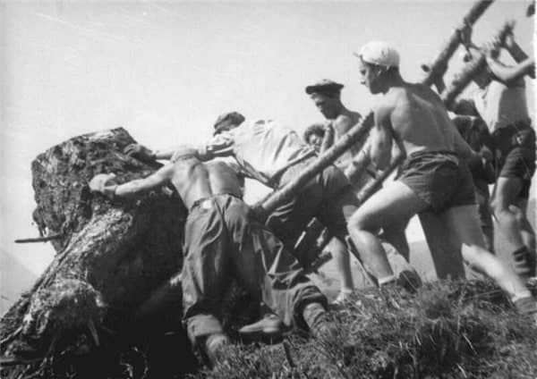
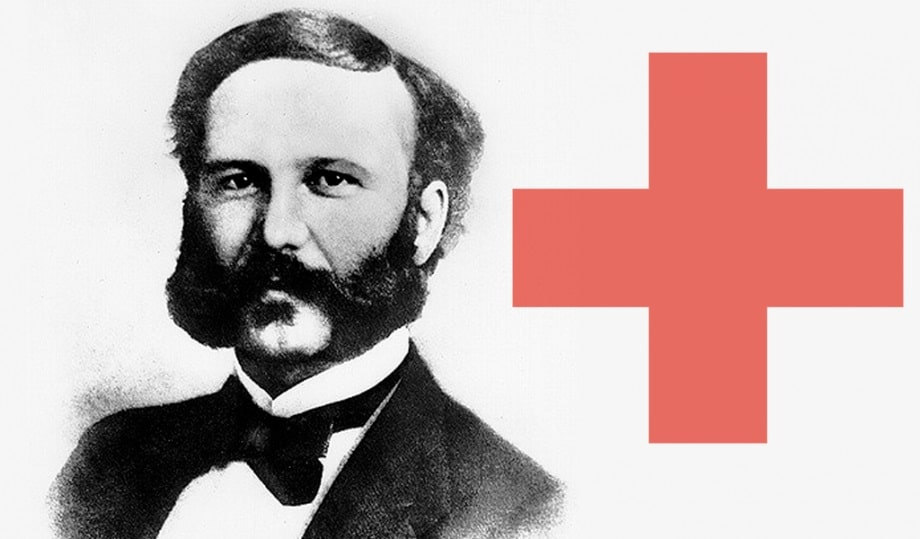
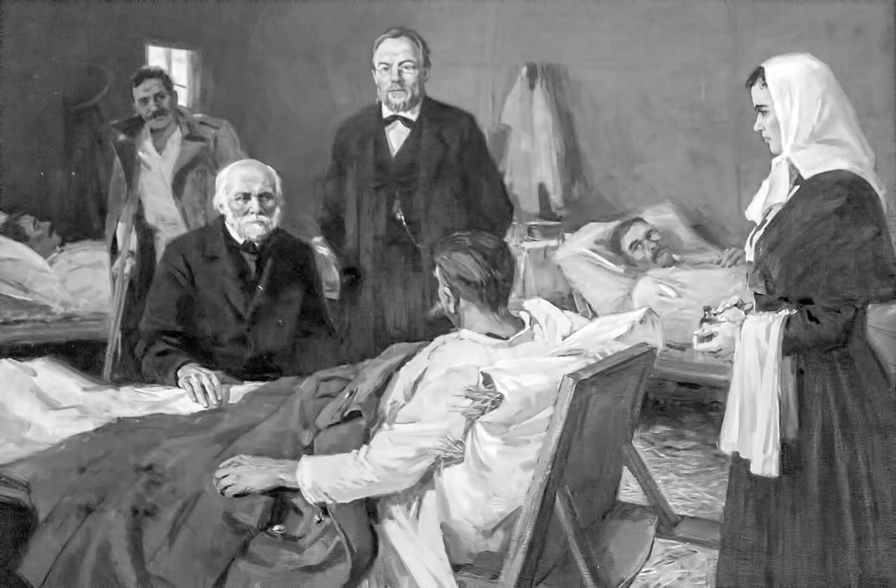

Волонтёрство (от лат. voluntarius — добровольный) или добровольчество, добровольческая деятельность — это добровольная безвозмездная деятельность на благо общества и отдельных граждан. Если сформулировать определение не официальными терминами, то волонтерство – это бесплатная работа для того, чтобы помочь всем, кто в этом нуждается.
Из истории Добровольчество возникло тогда, когда возникло человечество. Необходимость выживать в трудных условиях приводила первобытных людей к сплочению и готовности помогать.
Долгие годы понятие добровольчества было военным термином, так как являлось основным способом комплектования армий, что продолжалось вплоть до введения всеобщей военной повинности. В XVIII—XIX веках в Австро-Венгрии, Франции, Италии волонтерские полки действовали как часть регулярной армии.
После Первой Мировой войны в 1920 году во Франции в Страсбурге начал работу первый молодежный волонтерский проект «Лучше работать вместе, чем воевать друг против друга». Участники проекта (молодые немцы и французы) восстанавливали разрушенные фермы в районе мест наиболее ожесточенных боев между немецкими и французскими войсками. С тех пор волонтёрство успело набрать размах и популярность всемирного масштаба. В добровольчестве определились разнообразные формы, виды, продолжительность деятельности.
С этого первого за всю историю человечества международного волонтёрского лагеря возникло первое волонтёрское движение, которое существует и по сей день. Оно носит французское название Service Civil International (Международная Гражданская Помощь).
На рубеже XIX и XX веков зародилось одно из самых старых и масштабных волонтерских движений — Общество Красного Креста. Основателем которого был швейцарский предприниматель и общественный деятель Анри Дюнан.
В добровольческой деятельности участвуют все слои населения независимо от уровня образования, профессии и доходов. Волонтерство рассматривается как форма гражданского участия в общественно полезных делах, способ коллективного взаимодействия и эффективный механизм решения актуальных социально-педагогических проблем. Таким образом, добровольчество стало важной составляющей демократического общества.
Волонтёрство (от лат. voluntarius — добровольный) или добровольчество, добровольческая деятельность — это добровольная безвозмездная деятельность на благо общества и отдельных граждан. Если сформулировать определение не официальными терминами, то волонтерство – это бесплатная работа для того, чтобы помочь всем, кто в этом нуждается.
История волонтерского движения в России отличается от зарубежной. В России идея волонтёрства (добровольчества) уходит в далекие времена, в глубь российской истории, когда россияне, воспитанные на моральных и этических традициях православия, оказывали безвозмездную помощь нуждающимся согражданам.
Развитие волонтерства на Руси начинается вскоре после 988 года, с принятием христианства. Российская история богата примерами добровольческого труда знаменитых и состоятельных россиян.
Известнейший российский хирург Н.И. Пирогов во время Крымской войны в 1855 году организовал Крестовоздвиженскую общину сестер милосердия, участницы которой в качестве добровольцев ухаживали за ранеными.
В царской семье считалось важным показывать пример милосердия и добровольного служения. Так, в Царском селе действовала община милосердия.
После революции 1917 года добровольчество стало неотъемлемой частью жизни каждого жителя страны. В ранние годы советской власти субботники были выражением революционного энтузиазма масс.
Дети и молодежь активно вовлекались в добровольчество в советской России через молодежные движения октябрят, пионеров, комсомольцев. А герои произведения «Тимур и его команда» вдохновляли и продолжают вдохновлять на добрые дела целые поколения школьников.
Во время великой отечественной войны 1941—1945 гг. тысячи жителей России ушли добровольцами на фронт.
После войны в 50-х годах началось массовое движение по освоению земель Казахстана, Поволжья, Урала, Сибири, Дальнего Востока. Тысячи добровольцев со всей страны приняли участие в реализации этой задачи.
В 1974 году строительство Байкало-Амурской железной дороги было объявлено всероссийской комсомольской стройкой, и было очень модно работать добровольцем на строительстве БАМ. Тысячи людей ехали в Сибирь, за таежной романтикой.
В СССР действовало мощное движение добровольных доноров крови, и быть донором было крайне почетно.
Понятие «волонтёрство» пришло в Россию в начале 1990-х годов. Появились некоммерческие организации — организации, главной целью которых не является прибыль. Они занялись благотворительностью, просветительской деятельностью и созданием условий для добровольцев.